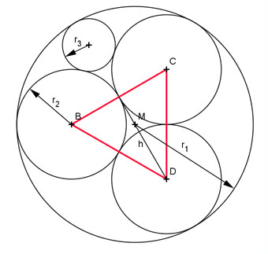
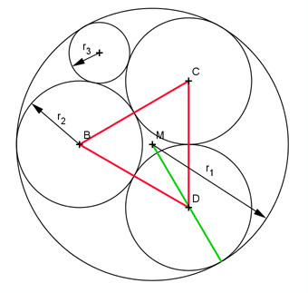
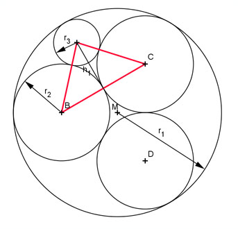
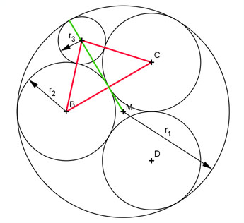

Pythagoras Aufgabe 70 Drücken Sie r2 und r3 durch r1 aus.  Das Dreieck BDC ist gleichseitig mit der Seitenlänge 2 * r2. Satz von Pythagoras im Dreieck EDC: EC = r2 DC² = ED² + EC² |-EC² ED² = h² = DC² - EC² h² = (2 * r2)² - r2² h² = 4r2² - r2² = 3r2² h = 1,732 * r2  2 r1 = --- h + r2 3 2 r1 = --- * 1,732 * r2 + r2 3 r1 = 1,155r2 + r2 = 2,155r2 |:2,155 r2 = 0,464 * r1  Das Dreieck ist gleichschenklig mit der Grundseite 2r2. Satz von Pythagoras im Dreieck BFE: BE = r2 + r3 2 * r2 BF = -------- = r2 2 BE² = BF² + FE² | -BF² FE² = h1² = BE² - BF² h1² = (r2 + r3)² - r2² h1² = r2² + 2 * r2 * r3 + r3² - r2² h1² = 2r2r3 + r3²  1 MF = --- * 1,732 * r2 (siehe Ergebnis oben) 3 EF = h1 EG = r3 MG = r1 MG = MF + FE + EG 1 r1 = --- * 1,732 * r2 + h1 + r3 3 1 r1 = --- * 1,732 * 0,464 * r1 + + r3 3 r1 = 0,268r1 + + r3 |-0,268r1 0,732r1 = + r3 |-r3 0,732r1 - r3 = |² 0,536r1² - 1,464r1r3 + r3² = 2r2r3 + r3² 0,536r11² - 1,464r1r3 + r3² = 2 * 0,464r1r3 + r3² |-r3² 0,536r1 - 1,464r1r3 = 0,928r1r3 |:r1 0,536r1 - 1,464r3 = 0,928r3 |+1,464r3 0,536r1 = 2,392r3 |:2,392 r3 = 0,224 * r1